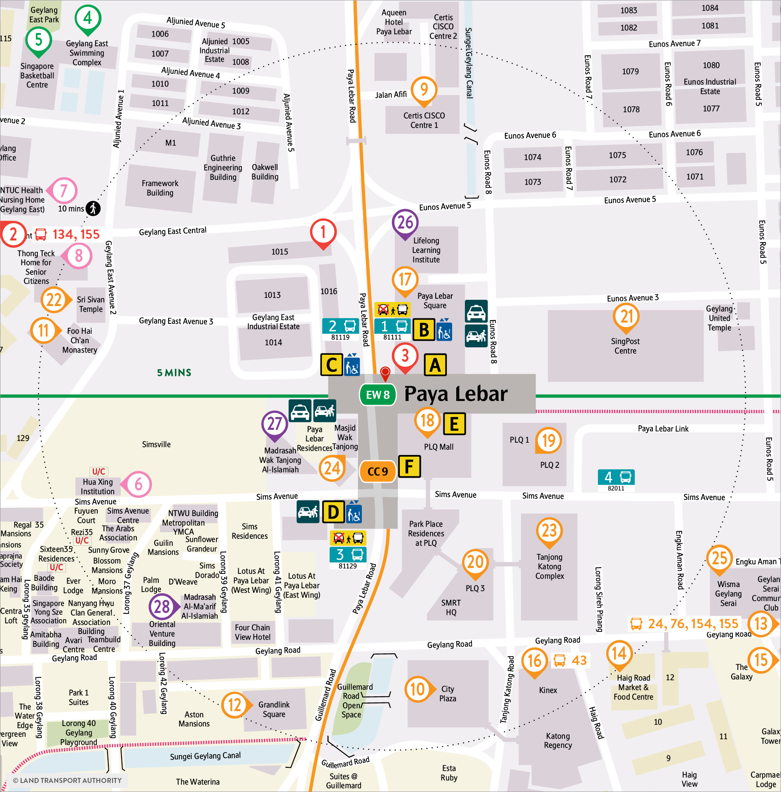
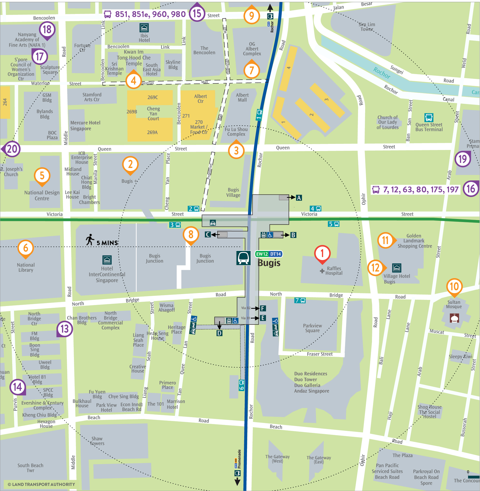

Review date: 18 September 2026. These diagrams render the pinned OpenStreetMap contributors / ODbL source geometry and the exact curated polyline. They show map-supported connectivity, not a field survey or turn-by-turn accessibility guarantee. Original SMRT/LTA locality maps below confirm entrance identity and road side.
Green: mapped pedestrian ways. Purple: reviewed path. Purple dots: explicitly reviewed platform connector. Gray: source building/road geometry. Red: mapped barriers.
60 m / 90 s exterior allowance, plus the separate 120 s indoor estimate.
Paya Lebar Road separates this stop from 81119. Remain on the east side. No road, driveway, railway or canal crossing on the selected exterior path.
Boarding connection: The bus platform marker and selected footway lie within the same mapped bus shelter footprint. The short lateral connector stays inside that shelter; it does not cross Paya Lebar Road.
Source way(s): 877813337 v4, 188867235 v9. Raw trace 41.37 m; stop-position uncertainty allowance 10.17 m. Map-supported; no field survey.
Indoor path and accessibility unknown. The source maps are dated; current obstructions or facility operation are unverified.
Green: mapped pedestrian ways. Purple: reviewed path. Purple dots: explicitly reviewed platform connector. Gray: source building/road geometry. Red: mapped barriers.
60 m / 90 s exterior allowance, plus the separate 120 s indoor estimate.
Do not cross Paya Lebar Road to Exit B. The route ends before OSM underground walkway 188867494. Shared cycling is mapped; conflict-free passage is not promised.
Boarding connection: The bus marker is beside the foot-designated shared path on the same west-side stop forecourt shown by the operator map. The lateral connector stays on that forecourt; no carriageway is crossed.
Source way(s): 547109567 v3, 1415207209 v1, 370173956 v2. Raw trace 37.83 m; stop-position uncertainty allowance 16.18 m. Map-supported; no field survey.
Indoor path and accessibility unknown. The source maps are dated; current obstructions or facility operation are unverified.
Green: mapped pedestrian ways. Purple: reviewed path. Purple dots: explicitly reviewed platform connector. Gray: source building/road geometry. Red: mapped barriers.
50 m / 90 s exterior allowance, plus the separate 120 s indoor estimate.
Stay on the Raffles Hospital side. Do not cross Victoria Street or Rochor Road. The selected path stops before the hospital driveway crossings farther northeast.
Boarding connection: None: OSM bus stop node 410483661 is itself a vertex of footway 545573091, and the final node is a vertex of station building 164882623.
Source way(s): 545573091 v4, 545573093 v10, 164882621 v2. Raw trace 44.55 m; stop-position uncertainty allowance 4.43 m. Map-supported; no field survey.
Indoor path and accessibility unknown. The source maps are dated; current obstructions or facility operation are unverified.
Green: mapped pedestrian ways. Purple: reviewed path. Purple dots: explicitly reviewed platform connector. Gray: source building/road geometry. Red: mapped barriers.
20 m / 60 s exterior allowance, plus the separate 120 s indoor estimate.
Victoria Street separates this stop from 01059. No Victoria Street or Rochor Road crossing is enabled. Do not substitute stop 01112.
Boarding connection: The reviewed seven-metre connector joins the bus platform marker to its same-side footway junction. The official locality map places both stop 4 and Exit A on this forecourt, without an intervening carriageway.
Source way(s): 739532532 v3. Raw trace 12.33 m; stop-position uncertainty allowance 4.25 m. Map-supported; no field survey.
Indoor path and accessibility unknown. The source maps are dated; current obstructions or facility operation are unverified.
SMRT's page template dates these maps to February 2021. Current retrieval is not a new map revision. Exact stop identities are cross-checked against the September 2026 DataMall import and OSM way versions.


{kind=link}
{kind=link}